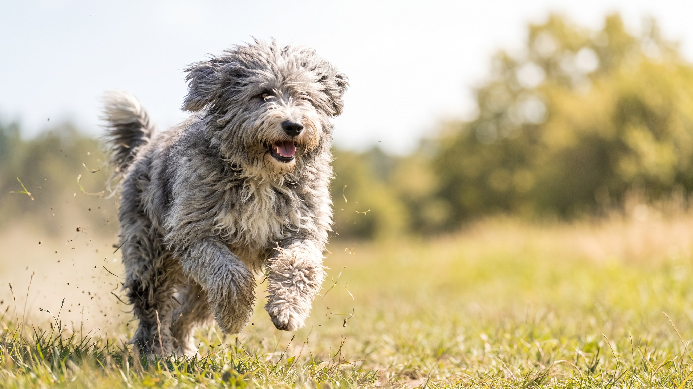

Большинство хозяев привыкли, что длинную шерсть надо расчёсывать. У бергамаско всё наоборот: шерсть сама сбивается в плотные пластины-флоки, и расчёска им только навредит. За этой необычной внешностью скрывается спокойный, самостоятельный пастух-охранник, который веками работал в горах без подсказок от человека. Ниже про то, как устроена порода и что нужно знать до покупки бергамаско.
🐾 У вас бергамаско?
AnimaLife соберёт уход под породу: к каким болезням есть склонность, что проверять по возрасту, чем кормить и когда пора к врачу. Бесплатно, прямо в мессенджере.
Собрать план ухода → Собрать в MAX →
У вас iPhone? AnimaLife есть в App Store
Бергамская овчарка веками охраняла альпийские стада без пастуха рядом. Это выработало два качества сразу: самостоятельность в решениях и глубокую преданность своей группе. Бергамаско воспринимает семью как свою отару и относится к каждому её члену серьёзно.
С детьми порода терпелива. Незнакомцев встречает с настороженностью, но без агрессии: сначала оценивает. Лай поднимает только по делу: незнакомый человек во дворе или непонятный звук ночью. Дрессировка идёт хорошо, но бергамаско любит понимать, зачем выполняет команду. Механическое повторение без смысла его не мотивирует.
Шерсть бергамаско состоит из трёх типов волос, которые переплетаются и слипаются сами: примерно к 1–2 годам щенячья пушистость превращается в характерные плоские пластины, покрывающие бока и круп. Их называют флоки (flocks).
В первый год, пока флоки формируются, хозяину придётся часто помогать руками: разделять сбившиеся участки. Потом работы становится меньше.
Бергамаско не гиперактивна. Двух прогулок по 40–50 минут в день достаточно, чтобы порода чувствовала себя хорошо. Порода рада поработать головой: поиск, послушание, пастьба. Если нет возможности выезжать в поле, апортировка и нюхательные игры закрывают потребность.
В квартире бергамаско живёт нормально при условии достаточных прогулок. Дом с двором предпочтительнее: бергамская овчарка любит обходить территорию и контролировать периметр. Одиночество переносит терпимо, но надолго одного не оставляйте.
Бергамаско подойдёт тем, кто готов к нестандартному уходу за шерстью и хочет спокойную, думающую собаку без лишнего шума. Порода хороша для семей с детьми, загородного дома, людей, которым нужен надёжный компаньон, а не декорация.
Бергамаско не подходит тем, кто хочет отрабатывающую машину без своего мнения. Порода самостоятельна и порой проверяет решения хозяина. Ещё один стоп-сигнал: если шерсть вас пугает уже на этапе чтения статьи, заведите другую породу. Уход за флоками требует терпения, особенно в первые два года.
Материал носит информационный характер и не заменяет очную консультацию ветеринара.
🐾 Ваш питомец — бергамаско?
Заведите профиль в AnimaLife: приложение запомнит породу, возраст и вес и будет подсказывать по уходу именно для неё. Вопросы AI-ветеринару — круглосуточно и бесплатно.
Завести профиль → Завести в MAX →
У вас iPhone? AnimaLife есть в App Store
🐾 Понравился разбор?
Подпишитесь на канал — каждый день разбираем по одному тревожному симптому у кошек и собак: что в пределах нормы, а когда пора к врачу. Подпишитесь, чтобы не пропустить разбор, который может спасти здоровье вашего питомца.